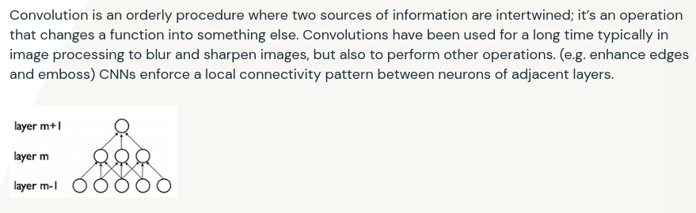

don't take the set example too seriously, it's for your understanding.
gif taken from here.

consider the 'blue' matrix as the input matrix, and the 'green' as something known as a filter/kernel.
as an undergraduate student studying computer science, you are definitely required
to take a few math courses during the first three or four semesters, ranging from calculus
to linear algebra and differential equations, and you might've come across something called
convolution theorem in laplace/z-transforms, which describes the product of said two transforms.
in this blog, i will describe a similar definition of convolution, under the context of deep
learning, or specifically, convolutional neural networks (CNN).
databricks.com says:

sounds complicated and demotivating right? let's break it down.
convolution is simply the product of two matrices. one can imagine it as a relation [recall
your jee math stuff], an input set and an output set. a sort of "mapping" is done between these
two sets and the result is the output set.
don't take the set example too seriously, it's for your understanding.
gif taken from here.
consider the 'blue' matrix as the input matrix, and the 'green' as something known as a filter/kernel.
when you came across convolutional neural networks, you might've come across something called downsampling, upsampling, etc. what it means is that:
kernel = [[1, 0, -1],
[1, 0, -1],
[1, 0, -1]]
contains information on the "vertical edges" to pass through the input matrix, whereas a kernel like:
kernel = [[1, 1, 1],
[0, 0, 0],
[-1, -1, -1]]
contains information on the "horizontal edges" to pass through.
tensorflow or torch already provide convolution layers that could be implemented without doing so from
scratch. however, it is important to get an understanding of how convolution works by understanding the math behind it.
taken from here.
one can define a 2d convolution for example using just numpy, like so:
import numpy
class Conv2D:
def __init__(self, kernel: numpy.ndarray, stride: int, padding: int) -> None:
self.kernel = kernel
self.stride = stride
self.padding = padding
def forward(self, in_matrix: numpy.ndarray) -> numpy.ndarray:
i_w, i_h = in_matrix.shape
k_w, k_h = self.kernel.shape
padded_input = numpy.pad(in_matrix, ((self.padding, self.padding), (self.padding, self.padding)), mode="constant", constant_values=0)
o_h = ((i_h + 2*self.padding - k_h) // self.stride) + 1
o_w = ((i_w + 2*self.padding - k_w) // self.stride) + 1
out_matrix = numpy.ones((o_w, o_h))
for i in range(o_w):
for j in range(o_h):
o_i = i * self.stride
o_j = j * self.stride
i_end = o_i + len(self.kernel)
j_end = o_j + len(self.kernel)
sub_matrix = padded_input[o_i:i_end, o_j:j_end]
out_matrix[i, j] = numpy.sum(numpy.multiply(sub_matrix, self.kernel))
return out_matrix
you can take a look at my other pieces of code which i have written out in the repository linked above.